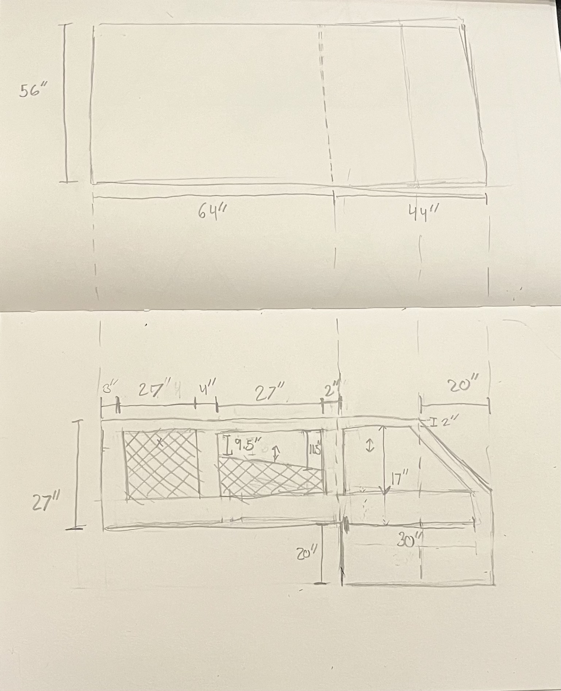
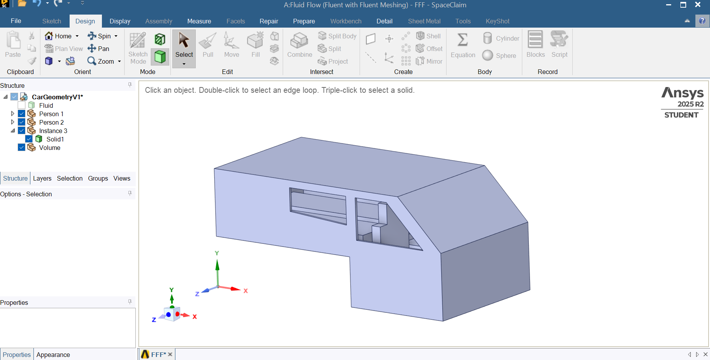
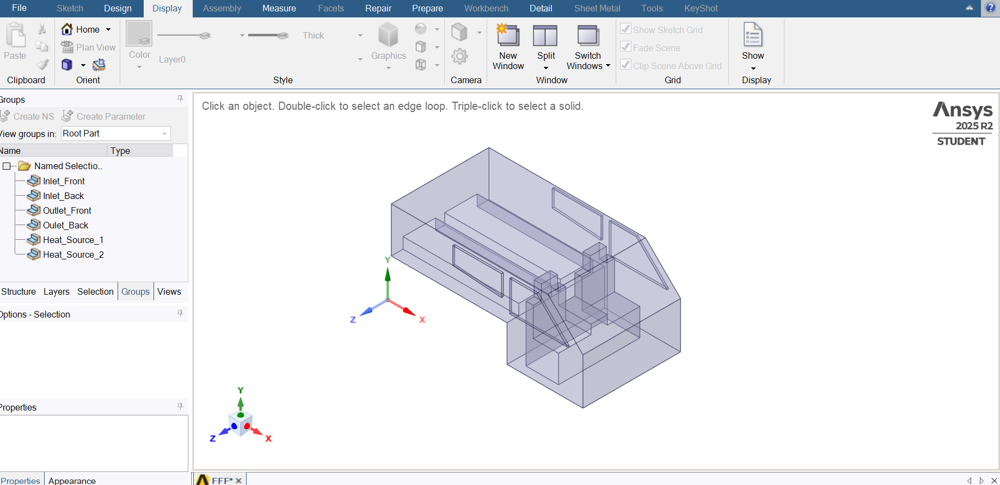
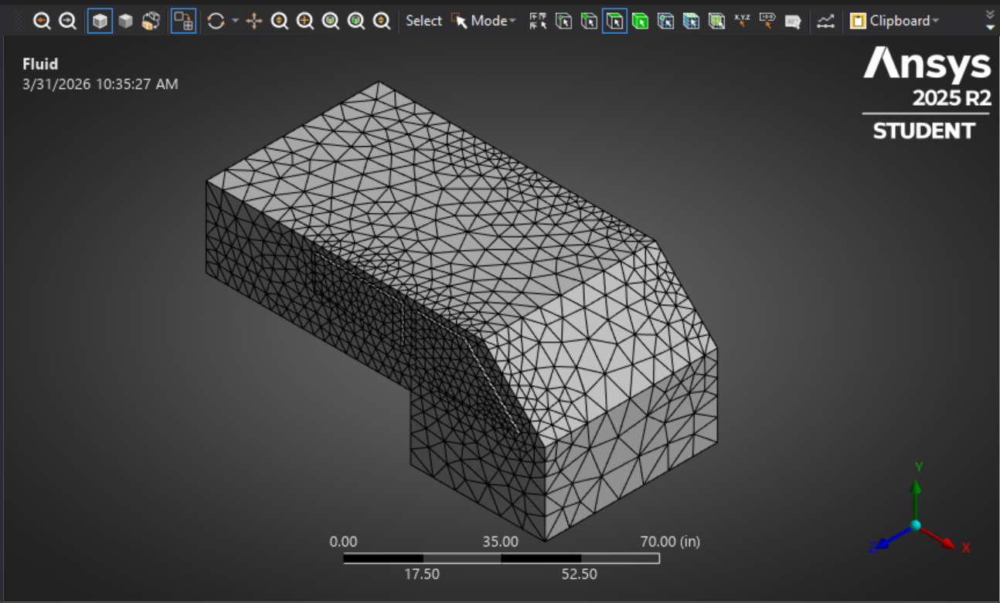
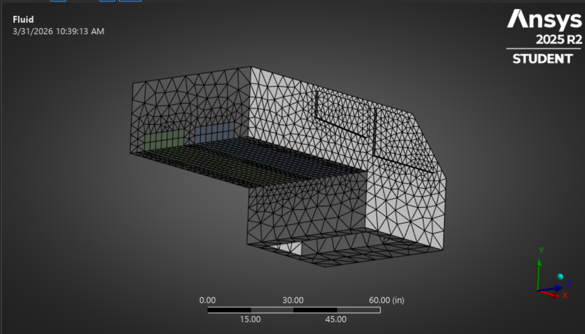

Designed and simulated a car camping system to improve airflow.
Car camping in varying weather conditions can significantly impact the sleep of those exploring the world in their cars. As a result, weather is often a deterring factor for those wanting to car camp





Discussion of tradeoffs and design decisions.
← Back to Home